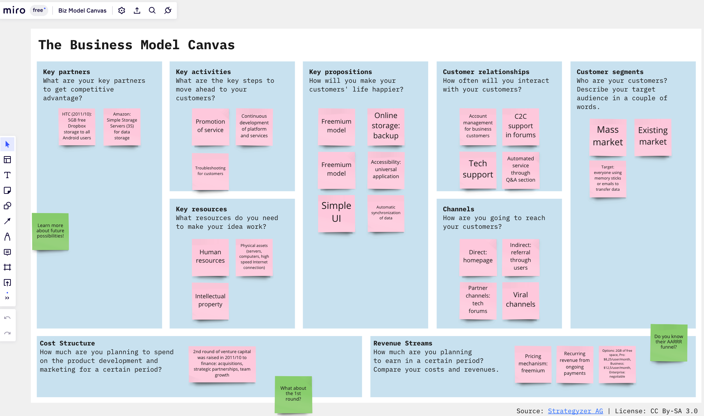

Product managers love methodologies, frameworks, mental models, processes, graphs, charts, infographic. You name it, I’ve likely used it. In established organizations, having definitions around what needs to be done and documentation that is agreed upon by everyone involved helps to get the product built. But those familiar ways of doing things can damage a budding startup opportunity.
I’ll name two commonly used ways of how product people work and why it doesn’t work for a startup.
1. Product development process and planning
Product development is often described as a series of steps taken in order to launch a product or a service. The development process takes a methodical approach in order to come up with ideas that work for customers and generate profit.

Creating a product development plan
In the linear, systematic approach to developing a new product, a product development plan may emerge in order to bring more order to the chaos. A plan usually includes:
- product vision: This may include the purpose of the product, what the product should do, and the scope of the product.
- business case: This may be explained using marketing surveys (e.g., NPS scores).
- roadmap: This may include a list of milestones and goals to hit, like go-live dates, as well as a breakdown of how the work will get done across multiple goals (or sprint planning against the epics if you’re inclined to use scrum terminology).
2. The Business Model Canvas
A product plan may be too much information to zoom in on. One of the popular one-pager templates that’s often suggested to entrepreneurs is The Business Model Canvas. This allows you or your stakeholders to have a quick glimpse at the viability of your business based on your idea. It’s a well-loved framework; so much so that popular ideation tools like Mural and Miro have it as a built-in template.

To complete the canvas, you need to fill in each section with your go-to-market strategy by identifying the following:
- Stakeholders and partners,
- Steps towards customer activation,
- Pricing and revenue,
- Customer segments
- Selling points for customers, and
- Engagement points for customers.
Why product development plans and the canvas don’t work for startups
- There’s too much uncertainty and the environment radically changes from day to day.
- Startups often have limited resources in time and money. So it’s imperative to validate your business model and product as soon as possible. The traditional ways of product launching is often rigid and time-consuming.
- You’ll end up spending a lot of your energy, attention, and effort towards guesstimating. A business model of a startup is often in flux as you try to find the right product-market fit. If you think your local weatherman is bad at forecasting, try coming up with your customer acquisition steps and the path to monetization. If you can do that accurately, please send me the numbers to the next Powerball drawing; please and thank you.
If you found my blog helpful, please consider adding to my book fund. You can also make requests on what I should read next!